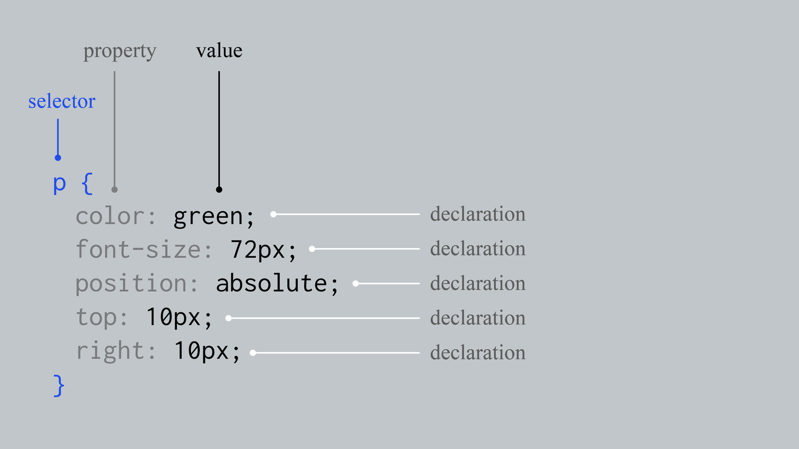

### Before we start - Install [Google Chrome](https://www.google.co.uk/chrome/) - Install a code text editor like [Atom](https://atom.io/) or [SublimeText](https://www.sublimetext.com/)
## Designing for screens
[Connections](https://vimeo.com/79718420) by James Burke, 1978
Designing for screens is managing constant change: everything is always in flux.
### Interactivity - User input - Variables like time or location
### Interactivity - https://www.arch.columbia.edu/identity - https://studiomoniker.com/projects/puff-up-club - http://a-friend-is-writing.new-document.net/
### Customisation - Users can participate in the design process - http://poeticcomputation.info/chapters/ch.1/
### Variability - No solid boundaries - No guarantee of how it will be displayed
#### Sometimes fallback fonts are used instead of the typefaces we have carefully chosen to be part of the design. Because if a reader has a spotty internet connection, it’s more important for her to see the text than it is for her to see the text clothed in any specific typeface. #### The web has forced us to isolate and prioritise text for its semantic value. Form literally follows function. [Tim Brown](https://deardesignstudent.com/the-web-is-terrible-for-typography-9607089dbafa)
What type of content is it? What should the structure be? What should the tone be? Who will be the audience?
How does digital media change how we read online?
### Some examples - [Avery Review](http://averyreview.com/issues/44/call-and-response) - [The Ether Thief](https://www.bloomberg.com/features/2017-the-ether-thief/) - [The Periodic Table](https://www.bloomberg.com/features/2019-periodic-table-elements-issue/) - [The Value of Form](http://kabk.github.io/govt-theses-15-alyar-aynetchi-the-value-of-form/) - [Data Society](https://datasociety.net/annualreport/) - [Irma Boom](https://stories.readymag.com/boom/) - [The Disconnect](https://thedisconnect.co/three/) - [Even more…](https://www.are.na/gemma-copeland/reading-online-0bu1tmlwd7s)
## HTML & CSS Basics
## HTML = Structure
### HyperText Markup Language Tells the browser how to structure a webpage
### HyperText Markup Language Made up of elements formed by tags put around text
<img data-src="images/html-tags.jpg">
<img data-src="images/html-content.jpg">
<img data-src="images/html-element.jpg">
### Attributes - Extra info that you don't want to appear in the content - Modify the element in some way - Give an element an identifying name so you can target it with CSS
<img data-src="images/html-attribute.jpg">
### Basic anatomy - `<head>`: All the stuff that _isn't_ your content, like metadata and links to stylesheets - `<body>`: Everything else
### Set up 1. Go to the folder where your websites live 2. Set up a new folder following the typical structure, including `images` and `css` 3. Add the HTML template and rename it to `index.html` 4. Update the `<head>` section 5. Add your written reflection to the `<body>` section
### Basic elements - `<p>`: paragraph - `<h1>` to `<h6>`: headings - `<ul>`: unordered list - `<ol>`: ordered list - `<li>`: list element - `<em>`: emphasis - `<strong>`
### Containers - `<div>`: block-level element - `<span>`: inline-level element
### Structure - `<header>` - `<nav>` - `<article>`: independent, self-contained content - `<section>`: thematic grouping of content - `<aside>`: sidebars, inserts, or brief explanations - `<footer>`
<img data-src="images/building-structure.png">
### Creating links - `<a href="https://www.are.na/">`: external site - `<a href="page.html">`: within the same directory - `<a href="folder/page.html">`: within a subdirectory - `<a href="../folder/page.html">`: up a directory - `<a href="#section">`: within the same file
### Comments - Ignored by the browser, won't be visible - Allows you to leave notes to yourself and other users - HTML: `<!-- and end with -->` - CSS: `/* and end with */` - Shortcut: `command + /`
### Markup your written reflection - Think about which tags are appropriate for which content - [All HTML tags](https://developer.mozilla.org/en-US/docs/Web/HTML/Element)
## CSS = Style
[Web design in 4 minutes](https://jgthms.com/web-design-in-4-minutes/)
### External style sheets - Create a new file in the `css` folder of your website called `main.css` - In the `<head>` section of your HTML file, add `<link rel="stylesheet" href="main.css">`
### Anatomy of CSS 
### Anatomy of CSS - Each rule selects an element and declares how it looks - Rules for each selector are surrounded by curly braces - Properties are separated by semicolons
### Selectors - element, e.g. `h1` - class, e.g. `.sidebar` - id, e.g. `#container`
### Specificity - Combine selectors to highlight specific groups by placing selectors together without spaces - e.g. `body.home` refers to a `body` element with the class of `home` - `<body class="home"></body>` in the HTML
### Cascades - There is a hierarchy for how styles are applied - Styles defined in an external style sheet override any browser defaults - Internal styles (typically found in the `<head>` section of a page) override external styles - Element styles (applied directly to an element) override internal styles
### Within a stylesheet - The last rule in a single declaration block will be the one applied - The most specific style will be the one applied
<img data-src="images/box-model.png">
### Box model - `margin` - `border` - `padding`
### Inline elements Inline elements “go with the flow.” If you put a lot of inline elements together, you’ll notice them flow left to right like text. - `img` - `a` - `span`
### Block elements Block elements "stack one on top of another” … like blocks. - `h1` - `p` - `div`
### Color - `color` - `background-color` - `opacity`
### Text - `text-align` - `font-size` - `font-style`
### Pseudo-selectors - `:hover` - `:visited`
### Custom fonts - [Using @font-face](https://css-tricks.com/snippets/css/using-font-face/) - Embed from [Google Fonts](https://fonts.google.com/) - Generate a webfont kit via [Font Squirrel](https://www.fontsquirrel.com/)
### All CSS properties - [CSS Tricks](https://css-tricks.com/almanac/properties/) - [MDN Web Docs](https://developer.mozilla.org/en-US/docs/Web/CSS/CSS_Properties_Reference)